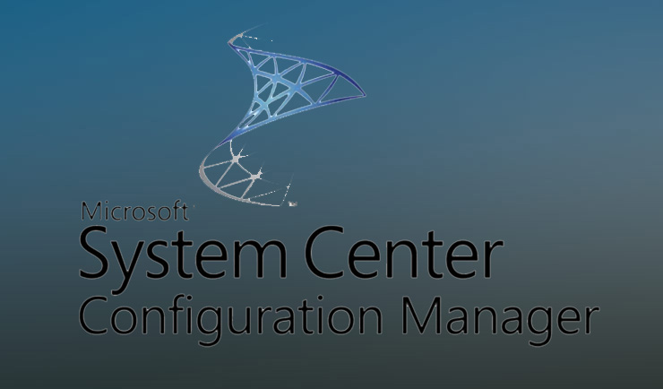
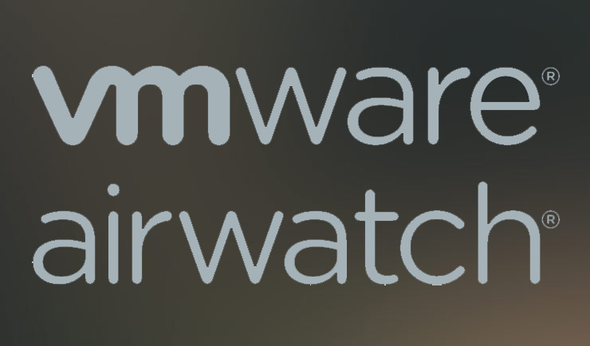
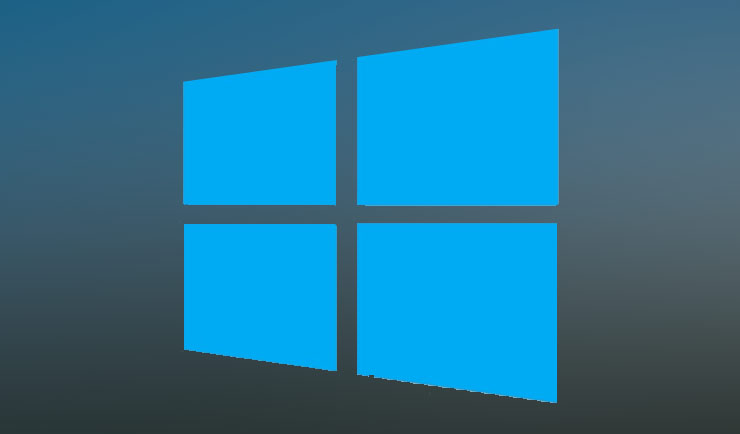
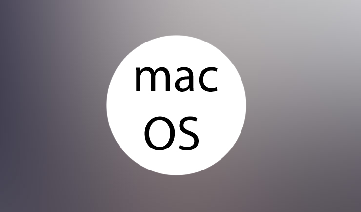
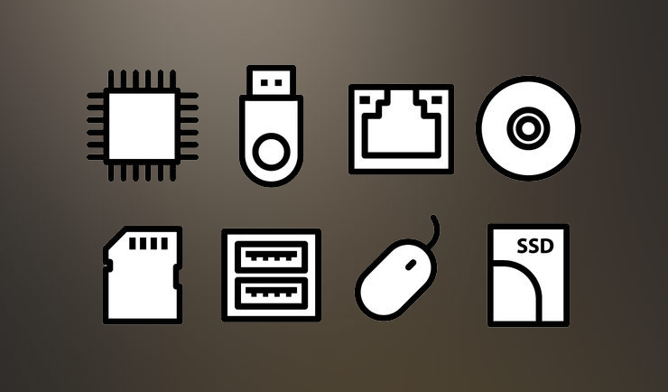
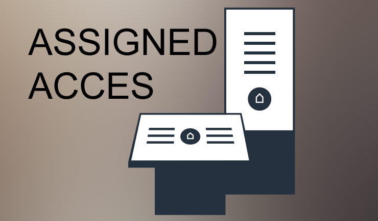

{kind=link}

Fachinformatiker für Systemintegration
Mein Schwerpunkt liegt in den Microsoft und VMware Umgebungen mit dem Schwerpunkt auf System Center Configuration Manager, Microsoft-Intune und VMware AirWatch.

Skills
{kind=link}

VMware AirWatch
{kind=link}
PowerShell Scripting
{kind=link}
Microsoft Intune
{kind=link}

Microsoft Windows 10
{kind=link}
Microsoft Windows 7
{kind=link}
Microsoft Office
{kind=link}
Microsoft Windows Server
{kind=link}
Active Directory
{kind=link}
Android
{kind=link}
Apple iOS
{kind=link}

Apple macOS
Projects
Implementierung eines abgesicherten iOS-Produkts unter Microsoft Intune
Entwicklung einer Desired-State-Configuration für Windows 10
{kind=link}
Automatisierung einer Migration von Hyper-V VMs zu ESX über PowerShell
Windows 10 Rollout und Patchmanagement
{kind=link}

Hardware- und Treiberintegration für neue Endgeräte
{kind=link}

Entwicklung eines Windows-Kiosk-Systems über den Assigned Access
Microsoft SCCM Clientmanagement
VMware AirWatch Mobile-Device-Management
About Me
Werdegang- Realschulabschluss
- Fachhochschulreife
- Ausbildung zum Fachinformatiker für Systemintegration
- Fraport AG
Berufserfahrung
- Praktikum Anwendungsentwicklung
- Praktikum Systemadministration
- Jahrespraktikum Systemintegration
- 1.5 Jahre Client- und Mobile-Device-Management bei Fraport AG